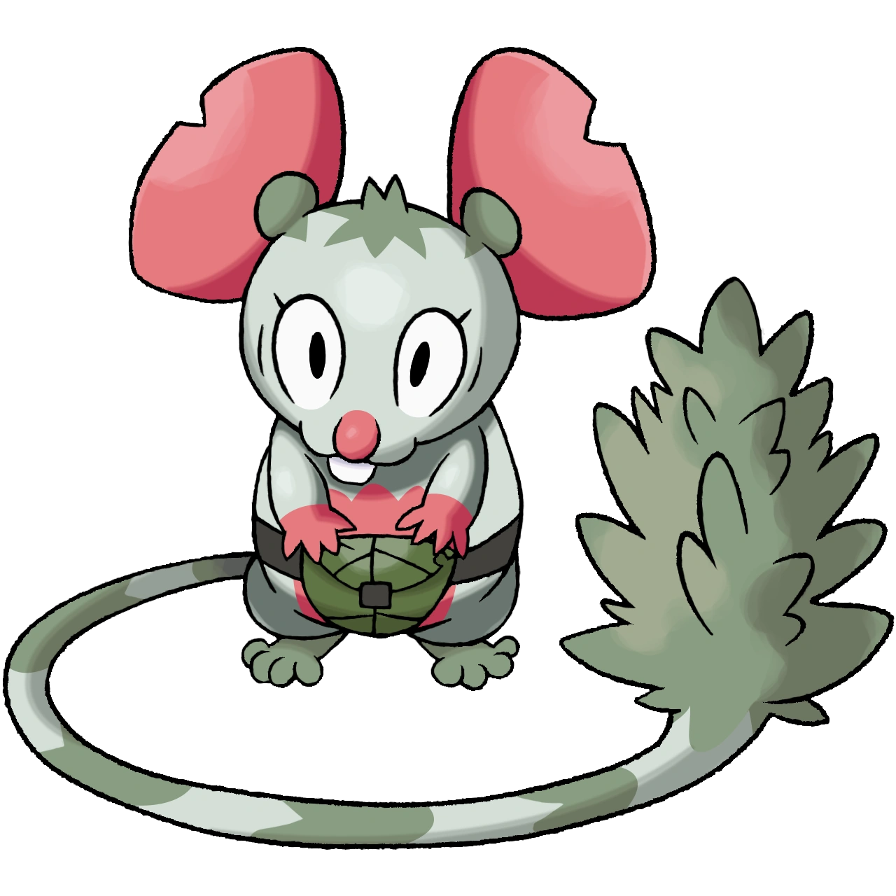

- 1
-
note that a .bib file is NECESSARY (functions will fail without a pre–existing .bib file to append to)
, also packages need to be locally installed (but do NOT need to be used in current project)
R is for
Authoring!!
Open Office Hours
(October 16, 2026)
- Recap session #151
- Today’s topic(s):
- Shared problem-solving
Reminder – check it out!!
Fantastic

Recap of Session
#151:


…citing packages with pakret
Small, focused package with 3
pkrt()– cite R or R packagepkrt_list()– cite collection of R packagespkrt_set()– configure settings
Alternative citation options:
we used the ‘plotly’ package version 4.10.4 (Sievert 2020) for the graph, and the ‘pakret’ package version 0.3.1 (Gallou 2026) for references.
BUT, we DID NOT use the ‘purrr’ package version 1.0.4 (Wickham and Henry 2025)
Note the auto–prose within the listings (“and” placement & “v.” vs. “version”)
…we also did not use ‘lubridate’ v. 1.9.5 (Grolemund and Wickham 2011), ‘devtools’ v. 2.4.5 (Wickham et al. 2022), ‘dygraphs’ v. 1.1.1.6 (Vanderkam et al. 2018), and ‘tinytable’ v. 0.8.0 (Arel-Bundock 2025)

- 1
- “Auto”–prose appended with citation
- 2
- Formatting permitted (here, italicized)
- 3
-
more “auto”–prose, mixed with package–specific information (version [
:ver] and reference [:ref]), note the parenthesis specification as well as the comma
…you can control the appearance of the rendering, overriding the defaults
We used the Rrrridiculous package cowsay (Virgin 1.2.2, Chamberlain and Dobbyn 2025).


Today…

Academic typst


References (from pakret)
Arel-Bundock, Vincent. 2025. tinytable: Simple and Configurable Tables in ’HTML’, ’LaTeX’, ’Markdown’, ’Word’, ’PNG’, ’PDF’, and ’Typst’ Formats. https://doi.org/10.32614/CRAN.package.tinytable.
Chamberlain, Scott, and Amanda Dobbyn. 2025. cowsay: Messages, Warnings, Strings with Ascii Animals. https://doi.org/10.32614/CRAN.package.cowsay.
Gallou, Arnaud. 2026. pakret: Cite ’R’ Packages on the Fly in ’R Markdown’ and ’Quarto’. https://doi.org/10.32614/CRAN.package.pakret.
Grolemund, Garrett, and Hadley Wickham. 2011. “Dates and Times Made Easy with lubridate.” Journal of Statistical Software 40 (3): 1–25. https://www.jstatsoft.org/v40/i03/.
Sievert, Carson. 2020. Interactive Web-Based Data Visualization with R, plotly, and Shiny. Chapman; Hall/CRC. https://plotly-r.com.
Vanderkam, Dan, JJ Allaire, Jonathan Owen, Daniel Gromer, and Benoit Thieurmel. 2018. dygraphs: Interface to ’Dygraphs’ Interactive Time Series Charting Library. https://doi.org/10.32614/CRAN.package.dygraphs.
Wickham, Hadley, and Lionel Henry. 2025. purrr: Functional Programming Tools. https://doi.org/10.32614/CRAN.package.purrr.
Wickham, Hadley, Jim Hester, Winston Chang, and Jennifer Bryan. 2022. devtools: Tools to Make Developing R Packages Easier. https://doi.org/10.32614/CRAN.package.devtools.